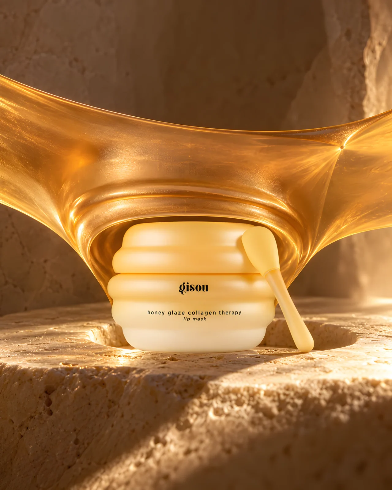
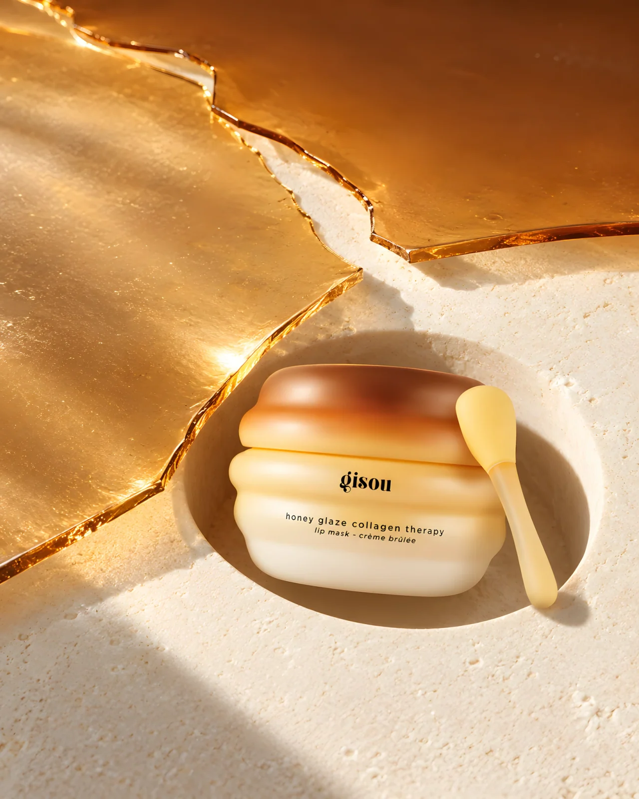
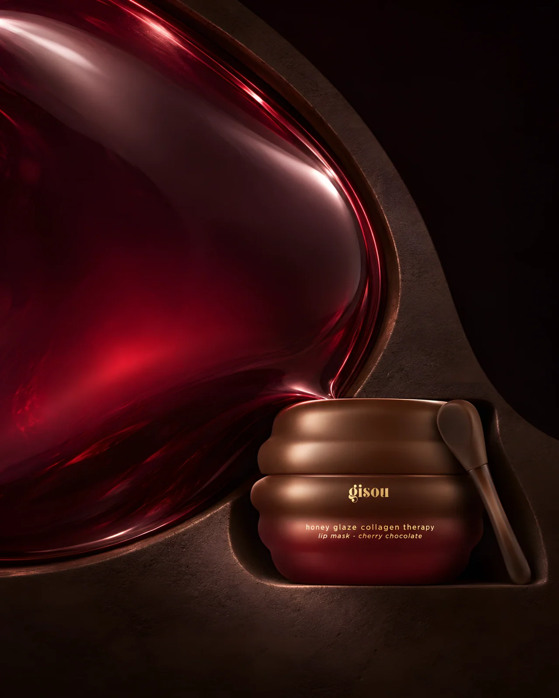
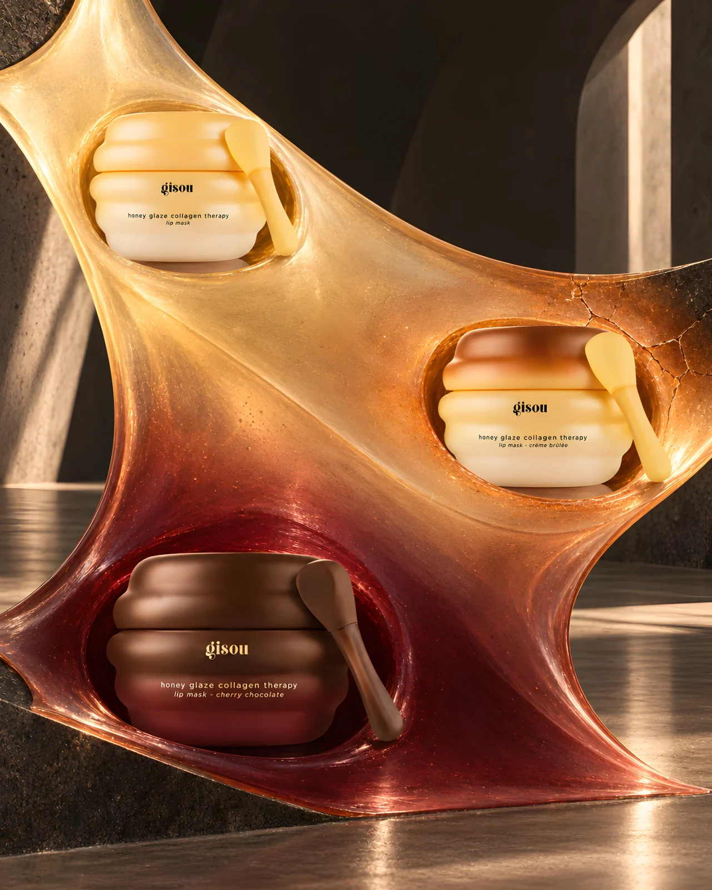

GISOU / THE YIELD
Three lip-mask variants held within one surface under tension.

The idea
The soft, stacked jar becomes the rule for a constructed world: translucent membranes are pulled into fitted hollows, fracture at one point and finally connect all three variants in a single continuous sheet. Desire comes from the instant a surface almost gives way.
Making the world
Honey-amber transmission, pale cream, dark burgundy and fine cast-shell fractures distinguish Original, Crème Brûlée and Cherry Chocolate. Official packshots guided the generated jars, but packaging is not pixel-locked. The four 4K-class files were enhanced from smaller generations; packaging microtype requires review before commercial use.
The series


